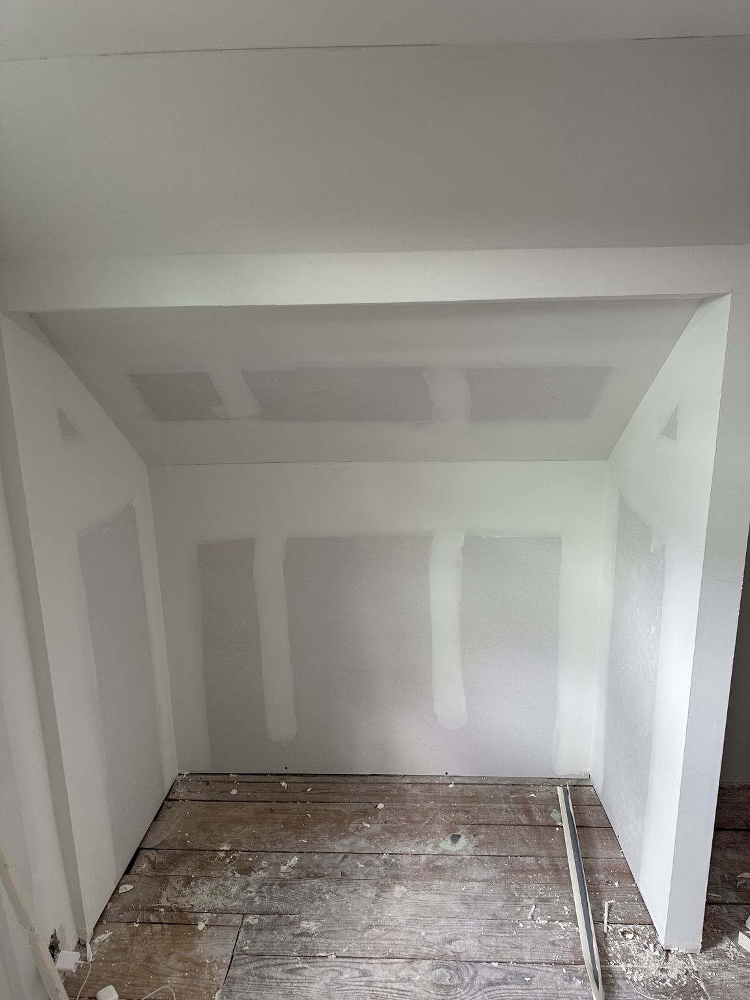
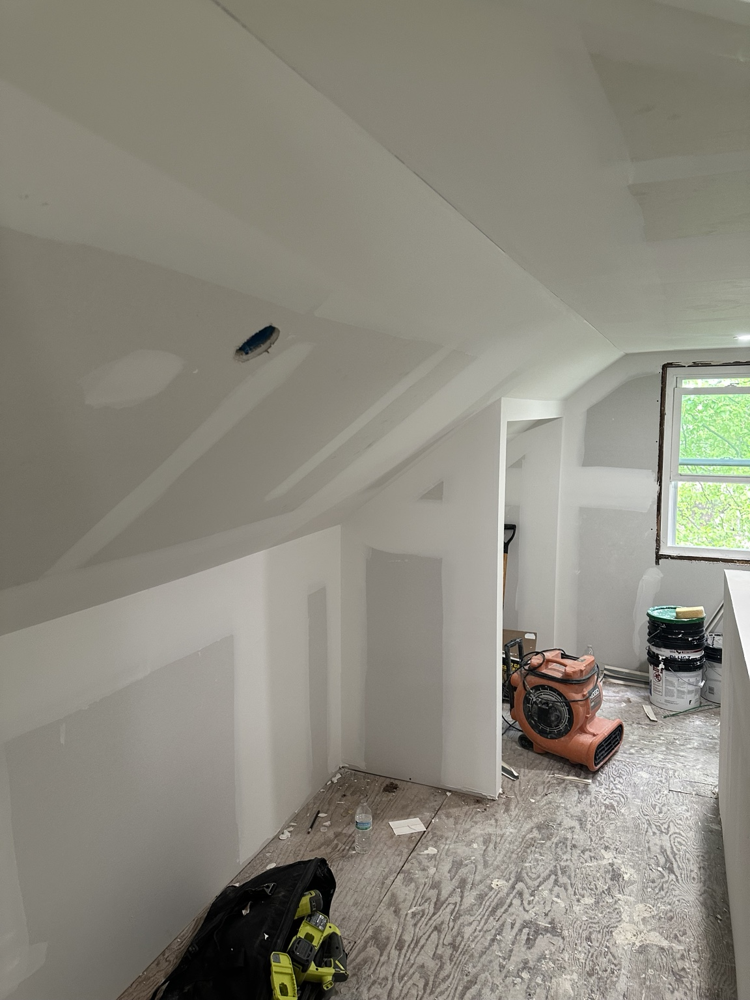

Drywall Repair Guide
A homeowner guide to wall patches, ceiling repair, spackle work, sanding, priming, and paint-ready drywall repairs.




1. Introduction
Drywall damage happens in almost every home. Door handles hit walls, tenants move furniture, old anchors pull out, leaks damage ceilings, and small cracks or dents make a room look unfinished.
2. Tools and Materials
- 4 inch spackle knife, 6 inch taping knife, and 10 inch knife for feathering.
- Utility knife, sanding sponge, 120 grit sandpaper, and 220 grit sandpaper.
- Drywall patch or mesh tape, spackle or joint compound, primer, and paint.
3. Prep the Area
Remove loose drywall paper, clean the area, protect the floor, and make sure the surface is dry. Good prep helps the patch bond and reduces rough edges.
4. Pick the Right Repair Method
Small nail holes, anchor holes, door handle holes, cracked seams, and water-damaged drywall all need different repair methods. Larger holes usually need patch material, tape, and wider feathering.
5. Apply the First Coat
Use a small amount of spackle or joint compound, press it into the repair, scrape it flat, feather the edges, and avoid building the patch too thick.
6. Dry Time
Fast-set products may dry in 15 to 30 minutes, but joint compound and thicker patches take longer. Sanding too early can tear the patch and create extra work.
7. Sand the First Coat
Use a sanding sponge or 120 grit sandpaper. Sand lightly, remove ridges, and wipe dust clean before adding another coat.
8. Add a Second Coat
Use a wider knife, spread wider than the repair, feather the edges, and allow full dry time. The second coat is usually where the patch starts to disappear.
9. Final Sand
Use 220 grit sandpaper and check the repair with side lighting. Avoid over-sanding into the paper or exposing tape.
10. Prime Before Paint
Primer helps prevent flashing. If the paint is older or the lighting is harsh, repainting the full wall may look better than painting only the patch.
11. Common Mistakes
- Using too much spackle.
- Sanding too early.
- Skipping primer.
- Not feathering edges wide enough.
- Painting only the patch when the wall color has aged.
12. When to Call a Pro
Call for large holes, ceiling damage, water damage, mold concerns, highly visible repairs, and paint-ready finish work where the patch needs to blend cleanly.
Need Drywall Repair in South Jersey?
Text photos of the wall or ceiling damage, your town, and the room where the repair is located. South Jersey Repairs helps with drywall repair, wall patching, ceiling repairs, tenant turnover repairs, and property maintenance.